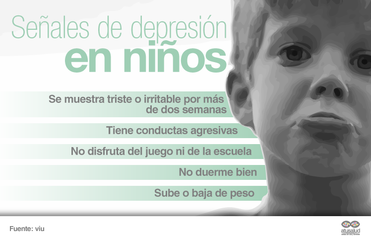

La depresión fantil es un transtorno afectivo, que se inicia en las etapas de desarrollo y produce en el niño o adolescente un estado anímico triste o en algunos casos irritable, descontento con él mismo y con su entorno, sin ganas de jugar o de relacionarse con los iguales. Este conjunto de emociones negativas no se encuentran acordes con el estímulo que las desencadena, ya sea por la intensidad o por la duración.
Signos de depresión infantil
La depresión infantil tiene una sintomatología un tanto diferente a lo que desarrollan los adolescentes y los adultos.
Los niños suelen mostrar:
*Falta de apetito
*Cansancio
*Aislamiento Social
*Autoestima Baja
*Tristeza frecuente

¿Se puede prevenir?
Uno de los aspectos más importantes para la depresión de los niños y niñas es la ayuda que les puedan prestar sus padres. En muchas ocasiones los padres no saben cómo reaccionar y tampoco son conscientes de que pueden ayudar mucho a su hijo o hija. A continuación, te proponemos algunas pautas que se pueden aplicar en estos casos:
*Decirle lo que hace bien. Tal y como comentábamos antes, un niño o niña que tiene una depresión suele tener una imagen negativa de sí mismo, por lo tanto, una labor importante que pueden hacer los padres es la de conocer sus virtudes y defectos para ayudarle a tener una visión positiva de sí mismo y decirle lo que hace bien para que se sienta apoyado y reconocido.
*Utilizar un lenguaje positivo. En numerosas ocasiones a los niños y niñas que padecen una depresión les resulta complicado distinguir entre los aspectos de su vida que pueden controlar y los que no, de manera que se sienten continuamente culpables por las cosas que suceden. La labor de los padres puede ser la de hacerles ver aquellos acontecimientos que pueden controlar porque dependen de ellos y otros que no pueden controlar.
*Explicar los cambios en la familia. En el ámbito familiar puede haber cambios, como el divorcio de los padres, que afecten a los niños y niñas. Para evitar que esto pueda producir una depresión o que los niños se sientan culpables de la situación, es fundamental que los padres expliquen con un lenguaje adecuado la situación y que establezcan pautas para que exista una rutina que dé estabilidad a los niños y niñas.
*Impulsar la motivación. La motivación de los niños y niñas se puede impulsar organizando actividades que les gusten mucho o hablando sobre temas que les diviertan, por ejemplo.
*Preparar sus comidas favoritas. Para ayudar a que no sufran problemas de peso, se pueden preparar sus comidas favoritas y relacionar el momento de las comidas con algo agradable, siempre teniendo en cuenta los hábitos saludables para nuestros hijos e hijas.
*Ayudarle con las pautas del sueño. Otro aspecto en el que los padres pueden ayudar a los niños y niñas es en el sueño. Por una parte, se puede favorecer que tengan unos hábitos de sueño de manera que se acuesten siempre a la misma hora y duerman un determinado número de horas. Por otra parte, también se puede favorecer la relajación antes del sueño con la lectura de algún libro o con música relajante.
*Enseñarle técnicas de relajación. Las técnicas de relajación pueden ser fundamentales para que el niño o la niña aprenda a controlar su ira. Es importante que cuando el niño o niña manifiesta una rabieta no reaccionemos también con ira, sino que mantengamos la calma y nos mostremos firmes, para entender lo que le ocurre y ayudarle a expresar sus emociones de forma positiva.
*Buscar ayuda profesional si es necesario. El cuidado de la salud emocional de los niños y niñas puede necesitar también la ayuda de un profesional en determinados casos.
Tratamientos para depresión infantil
Frecuentemente el tratamiento de la depresión en niños y adolescentes requiere la combinación de psicoeducación a los padres, psicoterapia y una medicación.
1. Tratamiento con medicación: Los antidepresivos que han demostrado en estudios científicos ser eficaces en niños y adolescentes con depresión son los inhibidores selectivos de la recaptación de la serotonina (ISRS). Estos medicamentos no son drogas, no crean dependencia ni adicción, ni cambian la personalidad del niño. 2. Tratamiento con psicoterapia al niño y a la familia: Es importante un apoyo con psicoterapia al niño y a la familia, ya que muchas veces los padres se culpan erróneamente de los problemas o dificultades del niño. También el niño se ha acostumbrado a percibir las cosas negativamente. Estas ideas negativas deben ir cambiando con el tratamiento a una visión más realista.